Funciones elementales El concepto de función ¿Qué es una función? Definición - Función de una variable. Una función $f$ de un conjunto $A$ en otro $B$ es una relación que asocia cada elemento $a\in A$, con un único elemento de $B$ que se denota $f(a)$, y se llama imagen de $a$ mediante $f$. $$\begin{aligned} f:\,&A\longrightarrow B\newline &a\longrightarrow f(a)\end{aligned}$$ 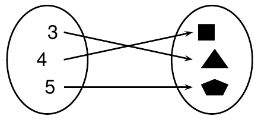 Cuando el conjunto inicial y final es el de los números reales $\mathbb{R}$, entonces se dice que $f:\mathbb{R}\rightarrow \mathbb{R}$ es una función real de variable real. Formas de representar una función Por extensión Representación en forma de tabla $$\begin{array}{|c|r|r|r|r|r|r|} \hline x & -2 & -1 & 0 & 1 & 2 & \cdots \newline \hline y & 4 & 1 & 0 & 1 & 4 & \cdots \newline \hline \end{array}$$ Representación gráfica Por Intensión Representación algebraica explícita $$y=x^2$$ Representación algebraica implícita $$y-x^2=0$$ Representación algebraica paramétrica $$\begin{cases} y=t^2\newline x=t \end{cases}$$ La función Identidad Definición - Función Identidad. Se llama función identidad, a toda función $Id: A\rightarrow A$ que asocia cada elemento de $A$ con sigo mismo, es decir, $$Id(x)=x.$$ Dominio e imagen de una función Dominio de una función Definición - Dominio de una función. El dominio de una función $f$ es el conjunto de valores para los que la función está definida $$Dom(f)={x\in \mathbb{R}: f(x)\in \mathbb{R}}$$ Ejemplo. Dada la función $$f(x)=\frac{1}{\sqrt{x^2-1}}$$ Para determinar su dominio hay que eliminar los valores en los que no está definida la función. En este caso hay que eliminar los valores que hacen negativo el radicando de la raíz del denominador, es decir, los valores de $x$ tales que $x^2-1<0$, que son los valores que cumplen $-1<x<1$, pero también hay que eliminar del dominio los valores que anulan el denominador, es decir, los valores de $x$ tales que $\sqrt{x^2-1}=0$, que son $x=-1$ y $x=1$. Por tanto, su dominio es $$\mbox{Dom}(f)=(-\infty,-1)\cup(1,\infty)$$ Imagen de una función Definición - Imagen de una función. La imagen de una función $f$ es el conjunto de valores que la función puede tomar $$Img(f)={y\in \mathbb{R}: y=f(x) \mbox{ para algún } x\in\mathbb{R}}$$ Ejemplo. Dada la función $f(x)=x^2-2$ Su imagen es $$\mbox{Img}(f)=[-2,\infty)$$ ya que la función cuadrática $x^2$ puede tomar cualquier valor de $0$ a $\infty$ (no toma nunca valores negativos), y al restarle 2, el mínimo valor que puede tomar la función $f$ es $-2$. Composición e inversa de una función Composición de funciones Definición - Composición de funciones. Dadas dos funciones $g:A\rightarrow B$ y $f:B\rightarrow C$, se define la función compuesta $f\circ g$, (leído $g$ compuesto con $f$) como la función $$\begin{aligned} f\circ g:\,& A\longrightarrow C\newline & x\longrightarrow f(g(x))\end{aligned}$$ Para calcular la función compuesta $f\circ g(x)$, primero se aplica $g$ sobre $x$ y luego, se aplica $f$ sobre $g(x)$: $$x\stackrel{g}{\longrightarrow}g(x)\stackrel{f}{\longrightarrow}f(g(x))$$ Ejemplo. Si $g(x)=\sqrt x$ y $f(x)=\operatorname{sen} x$, entonces $$f\circ g(x)=f(g(x))=f(\sqrt x)=\operatorname{sen} \sqrt x.$$ Inversa de una función Definición - Función inversa. Se llama función inversa de $f:A\rightarrow B$ a la función $f^{-1}:B\rightarrow A$ (cuando exista) que cumple $$f\circ f^{-1}=f^{-1}\circ f=Id(x)$$ La función inversa de $f$ deshace o revierte el efecto de $f$. Es decir, si $f:A\rightarrow B$ asocia un elemento $x\in A$ con otro $y\in B$, entonces $f^{-1}$ asocia el elemento $y$ con el $x$. 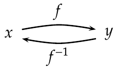 Ejemplo. La inversa de $f(x)=x^3$ es la función $f^{-1}(x)=\sqrt[3]{x}.$ Sin embargo, la inversa de la función $x^2$ no es $\sqrt{x}$ ya que la raíz tiene dos imágenes, una positiva y otra negativa, y por tanto no sería una función. 1 Crecimiento de una función Definición - Función creciente y decreciente. Se dice que una función $f$ es creciente en un intervalo $I$, si para todo $x_1,x_2\in I$, con $x_1<x_2$, se cumple $f(x_1)\leq f(x_2)$. Se dice que una función $f$ es decreciente en un intervalo $I$, si para todo $x_1,x_2\in I$, con $x_1<x_2$, se cumple $f(x_1)\geq f(x_2)$. 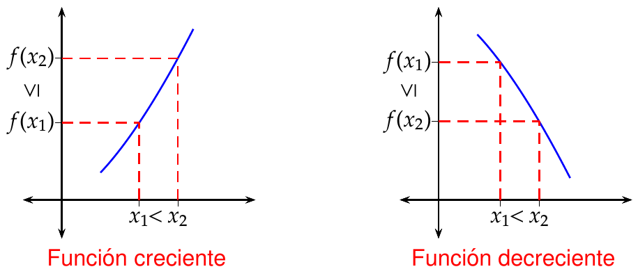 Extremos de una función Definición - Máximo y mínimo relativo. Se dice que una función $f$ tiene un máximo relativo en $x_0$, si existe un $\delta>0$ tal que para todo $x\in (x_0-\delta,x_0+\delta)$ se cumple $f(x_0)\geq f(x)$. Se dice que una función $f$ tiene un mínimo relativo en $x_0$, si existe un $\delta>0$ tal que para todo $x\in (x_0-\delta,x_0+\delta)$ se cumple $f(x_0)\leq f(x)$. 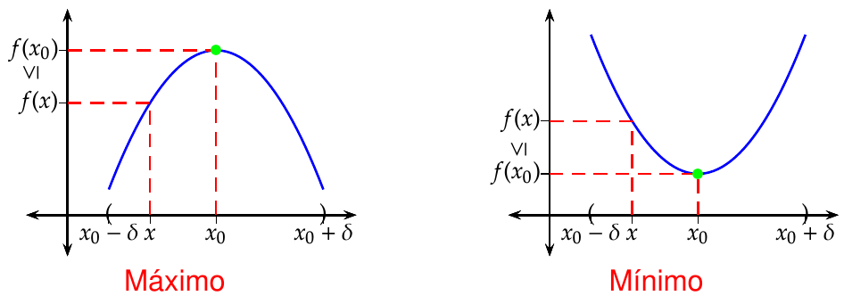 Concavidad de una función Definición - Función cóncava y convexa. Se dice que una función $f$ es cóncava en un intervalo $I$, si para todo $x_1,x_2\in I$, con $x_1<x_2$, se cumple que el segmento que une los puntos $(x_1,f(x_1))$ y $(x_2,f(x_2))$ queda por encima de la gráfica de $f$. Se dice que una función $f$ es convexa en un intervalo $I$, si para todo $x_1,x_2\in I$, con $x_1<x_2$, se cumple que el segmento que une los puntos $(x_1,f(x_1))$ y $(x_2,f(x_2))$ queda por debajo de la gráfica de $f$. Al punto donde cambia la concavidad de una función se le llama punto de inflexión. 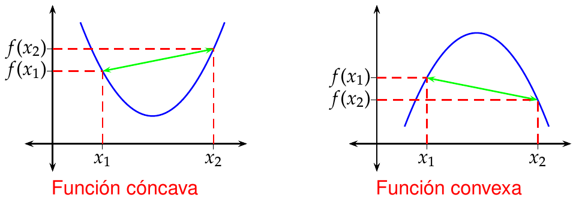 Funciones periódicas Definición - Función periódica y periodo. Se dice que una función $f$ es periódica si existe un valor $h>0$ tal que $$f(x+h)=f(x)$$ para todo $x\in \textrm{Dom}(f)$. Al menor valor de $h$ que verifica la igualdad anterior se le llama periodo de $f$, y a la diferencia entre el máximo y el mínimo de la función se le llama amplitud de $f$. 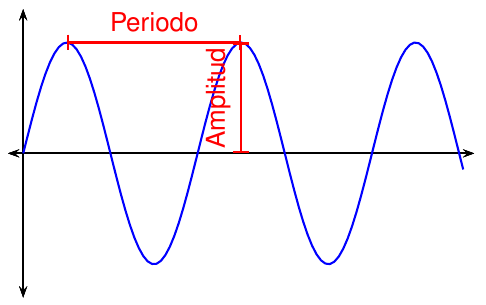 Funciones polinómicas Definición - Función polinómica. Una función polinómica es una función de la forma $$f(x)=a_0+a_1x+a_2x^2+\cdots+a_nx^n,$$ donde $n$ es un entero no negativo que se llama grado del polinomio, y $a_0,\ldots,a_n$ son constantes reales ($a_n\neq 0$) que se llaman coeficientes del polinomio. Ejemplo. Propiedades de las funciones polinómicas Su dominio es $\mathbb{R}$. Si el grado es impar, su imagen es $\mathbb{R}$. La función identidad $Id(x)=x$ es un polinomio de grado 1. Las funciones constantes $f(x)=c$ son polinomios de grado 0. Un polinomio de grado $n$ tiene a lo sumo $n$ raíces (puntos donde $f(x)=0$). Funciones racionales Definición - Función racional. Una función racional es una función de la forma $$f(x)=\frac{p(x)}{q(x)}$$ donde $p(x)$ y $q(x)$ son funcione polinómicas con $q(x)\neq 0$. Ejemplo. Propiedades de las funciones racionales Su dominio es $\mathbb{R}$ menos las raíces del polinomio del denominador. En estos puntos suele haber asíntotas verticales. La tendencia en $\infty$ y $-\infty$ depende del grado del numerador y del denominador. Si $f(x)=\dfrac{a_0+\cdots +a_nx^n}{b_0+\cdots+b_mx^m}$, entonces Si $n>m$ $\rightarrow$ $f(\pm\infty)=\pm\infty$. Si $n<m$ $\rightarrow$ $f(\pm\infty)=0$. Si $n=m$ $\rightarrow$ $f(\pm\infty)=\dfrac{a_n}{b_m}$. Los polinomios son casos particulares de funciones racionales. Pueden descomponerse en suma de fracciones simples. Funciones potenciales Definición - Función potencial. Una función potencial es una función de la forma $$f(x)=x^r,$$ donde $r$ es un número real. Ejemplo. 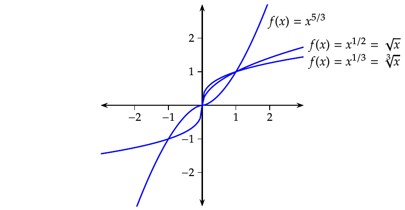 Propiedades de las funciones potenciales Si el exponente es un número racional $n/m$, entonces $$x^{n/m}=\sqrt[m]{x^n}.$$ Estas funciones se llaman irracionales. En este caso, si $m$ es impar el dominio es $\mathbb{R}$, si $m$ es par el dominio es $\mathbb{R}^+$. Todas pasan por el punto $(1,1)$. El crecimiento depende del exponente. Si $x>0$ entonces: Exponente positivo $\Rightarrow$ función creciente. Exponente negativo $\Rightarrow$ función decreciente. Además, si $f(x)=x^r$ y $g(x)=x^s$, entonces: Si $r<s$ $\Rightarrow$ $f(x)>g(x)$ si $0<x<1$ y $f(x)<g(x)$ si $x>1$. Si $r>s$ $\Rightarrow$ $f(x)<g(x)$ si $0<x<1$ y $f(x)>g(x)$ si $x>1$. Los polinomios de la forma $f(x)=x^n$ son un caso particular de funciones potenciales. Funciones exponenciales Definición - Función exponencial. Una función exponencial de base $a$ es una función de la forma $$f(x)=a^x,$$ donde $a$ es un valor real positivo distinto de 1. Ejemplo. Propiedades de las funciones exponenciales Su dominio es $\mathbb{R}$. Su imagen es $\mathbb{R}^+$. Todas pasan por el punto $(0,1)$. El crecimiento depende de la base. Si $f(x)=a^x$ entonces Si $0<a<1$ $\Rightarrow$ función decreciente. Si $a>1$ $\Rightarrow$ función creciente. Además, si $f(x)=a^x$ y $g(x)=b^x$ con $a<b$, entonces Si $x<0$ $\Rightarrow$ $f(x)>g(x)$. Si $x>0$ $\Rightarrow$ $f(x)<g(x)$. Un caso particular sería $a=1$ que es una función constante. Funciones logarítmicas Definición - Función logarítmica. Dada una función exponencial $f(x)=a^x$, se define la función logarítmica de base $a$ como la función inversa de $f$, y se denota $$f^{-1}(x)=\log_a x,$$ donde $a$ es un valor real positivo distinto de 1. Ejemplo. Propiedades de las funciones logarítmicas Por ser la inversa de la función exponencial, sus gráficas son simétricas respecto a la bisectriz del primer y tercer cuadrantes. Por tanto: Su dominio es la imagen de la función exponencial, es decir $\mathbb{R}^+$. Su imagen es el dominio de la función exponencial, es decir $\mathbb{R}$. Todas pasan por el punto $(1,0)$. El crecimiento depende de la base. Si $f(x)=\log_a x$ entonces Si $0<a<1$ $\Rightarrow$ función decreciente. Si $a>1$ $\Rightarrow$ función creciente. Además, si $f(x)=\log_a x$ y $g(x)=\log_b x$ con $a<b$, entonces Si $0<x<1$ $\Rightarrow$ $f(x)<g(x)$. Si $x>1$ $\Rightarrow$ $f(x)>g(x)$ No tiene sentido para $a=1$ por que sería una función constante. Funciones trigonométricas Surgen en geometría al medir las relaciones entre los catetos de un triángulo rectángulo, que dependen del ángulo del cateto contiguo y la hipotenusa de dicho triángulo. No obstante, esta no es la única definición posible, sino que también pueden definirse a partir de la función exponencial compleja. Seno Coseno Tangente Arcoseno Arcocoseno Arcotangente Seno de un ángulo Definición - Seno de un ángulo. Sea $\alpha$ cualquiera de los ángulos agudos de un triángulo rectángulo, se define el seno de $\alpha$, y se nota $\operatorname{sen} \alpha$, como el cociente entre el cateto opuesto y la hipotenusa. 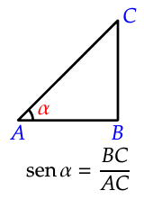 La definición se extiende fácilmente a ángulos de circunferencia con vértice en el origen y uno de sus lados el eje $OX$, como el cociente entre la ordenada de cualquier punto del otro lado y su distancia al vértice. 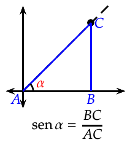 Función seno Definición - Función seno. Se define la función seno, $$f(x)=\operatorname{sen} x$$ como la función que asocia a cada ángulo $x$ (habitualmente medido en radianes) su seno. Propiedades de la función seno Su dominio es $\mathbb{R}$. Su imagen es el intervalo $[-1,1]$. Es periódica, con periodo $2\pi$ y amplitud $2$ $$\operatorname{sen} (x+2k\pi)= \operatorname{sen} x\quad \forall k\in \mathbb{Z}$$ Algunos valores para recordar: $\operatorname{sen} 0=0$, $\operatorname{sen} \pi/6= 1/2$, $\operatorname{sen} \pi/4=\sqrt{2}/2$, $\operatorname{sen} \pi/3= \sqrt{3}/2$, $\operatorname{sen} \pi/2 =1$, $\operatorname{sen} \pi = 0$, $\operatorname{sen} 3\pi/2=-1$, $\operatorname{sen} 2\pi=0$. Es una función impar: $\operatorname{sen}(-x)=-\operatorname{sen} x$. Coseno de un ángulo Definición - Coseno de un ángulo. Sea $\alpha$ cualquiera de los ángulos agudos de un triángulo rectángulo, se define el coseno de $\alpha$, y se nota $\cos \alpha$, como el cociente entre el cateto contiguo y la hipotenusa. La definición se extiende fácilmente a ángulos de circunferencia con vértice en el origen y uno de sus lados el eje $OX$, como el cociente entre la abscisa de cualquier punto del otro lado y su distancia al vértice. 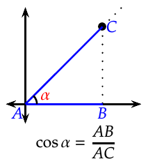 Función coseno Definición - Función coseno. Se define la función coseno, $$f(x)=\cos x$$ como la función que asocia a cada ángulo $x$ (habitualmente medido en radianes) su coseno. 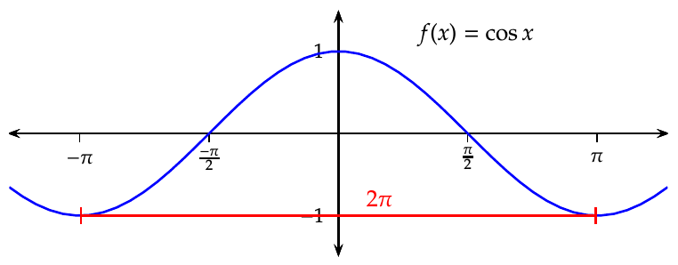 Propiedades de la función coseno Su dominio es $\mathbb{R}$. Su imagen es el intervalo $[-1,1]$. Es periódica, con periodo $2\pi$ y amplitud $2$ $$\cos (x+2k\pi)= \cos x\quad \forall k\in \mathbb{Z}$$ Algunos valores para recordar: $\cos 0=1$, $\cos \pi/6= \sqrt{3}/2$, $\cos \pi/4=\sqrt{2}/2$, $\cos \pi/3= \sqrt{2}/2$, $\cos \pi/2 =0$, $\cos \pi = -1$, $\cos 3\pi/2=0$, $\cos 2\pi=1$. Es una función par: $\cos(-x)=\cos x$. Tangente de un ángulo Definición - Tangente de un ángulo. Sea $\alpha$ cualquiera de los ángulos agudos de un triángulo rectángulo, se define la tangente de $\alpha$, y se nota $\operatorname{tg} \alpha$, como el cociente entre el cateto opuesto y el cateto contiguo. La definición se extiende fácilmente a ángulos de circunferencia con vértice en el origen y uno de sus lados el eje $OX$, como el cociente entre la ordenada y la abscisa de cualquier punto del otro lado. Función tangente Definición - Función tangente. Se define la función tangente, $$f(x)=\operatorname{tg} x=\frac{\operatorname{sen} x}{\cos x}$$ como la función que asocia a cada ángulo $x$ (habitualmente medido en radianes) su tangente. Propiedades de la función tangente Su dominio es $\mathbb{R}$ menos las raíces del coseno, es decir $\mathbb{R}-{2k\pi/2: k\in \mathbb{Z}}$. Su imagen es $\mathbb{R}$. Es periódica, con periodo $2\pi$ $$\operatorname{tg} (x+2k\pi)= \operatorname{tg} x\quad \forall k\in \mathbb{Z}$$ Algunos valores para recordar: $\operatorname{tg} 0=0$, $\operatorname{tg} \pi/6= 1/\sqrt{3}$, $\operatorname{tg} \pi/4=1$, $\operatorname{tg} \pi/3= \sqrt{3}$, $\operatorname{tg} \pi =0$, $\operatorname{tg} 2\pi=0$. Función arcoseno Definición - Función arcoseno. Se define la función arcoseno, $$f(x)=\operatorname{arcsen} x$$ como la función inversa de la función seno. Propiedades de la función arcoseno Por ser la inversa de la función seno, sus gráficas son simétricas respecto a la bisectriz del primer y tercer cuadrantes. Por tanto: Su dominio es la imagen de la función seno, es decir $[-1,1]$. Su imagen es el dominio restringido de la función seno, es decir $[-\pi/2,\pi/2]$.2 Es creciente en todo el dominio. Función arcocoseno Definición - Función arcocoseno. Se define la función arcocoseno, $$f(x)=\operatorname{arccos} x$$ como la función inversa de la función coseno. 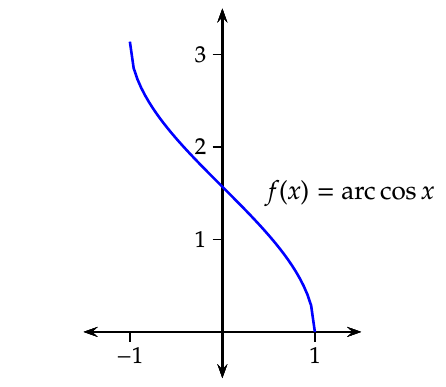 Propiedades de la función arcoseno Por ser la inversa de la función coseno, sus gráficas son simétricas respecto a la bisectriz del primer y tercer cuadrantes. Por tanto: Su dominio es la imagen de la función coseno, es decir $[-1,1]$. Su imagen es el dominio restringido de la función coseno, es decir $[0,\pi]$. 3 Es decreciente en todo el dominio. Función arcotangente Definición - Función arcotangente. Se define la función arcotangente, $$f(x)=\operatorname{arctg} x$$ como la función inversa de la función tangente. 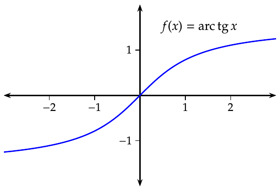 Propiedades de la función arcotangente Por ser la inversa de la función tangente, sus gráficas son simétricas respecto a la bisectriz del primer y tercer cuadrantes. Por tanto: Su dominio es la imagen de la función tangente, es decir $\mathbb{R}$. Su imagen es el dominio restringido de la función tangente, es decir $(-\pi/2,\pi/2)$. 4 Es creciente en todo el dominio. Algunas relaciones trigonométricas $\operatorname{sen}^2 x+\cos^2 x=1$ $\operatorname{sen}(x+y)=\operatorname{sen} x \cos y+\cos x \operatorname{sen} y$ $\cos(x+y)=\cos x \cos y-\operatorname{sen} x \operatorname{sen} y$ $\operatorname{tg} (x+y)= \dfrac{\operatorname{tg} x+\operatorname{tg} y}{1-\operatorname{tg} x \operatorname{tg} y}$ $\operatorname{sen} x + \operatorname{sen} y = 2 \operatorname{sen} \dfrac{x+y}{2}\cos\dfrac{x-y}{2}$ $\cos x + \cos y = 2 \cos \dfrac{x+y}{2}\cos\dfrac{x-y}{2}$ $\cos x - \cos y = -2 \operatorname{sen} \dfrac{x+y}{2}\operatorname{sen}\dfrac{x-y}{2}$ Notas Para que exista la inversa de la función cuadrática es necesario restringir el dominio a los reales positivos para que sea inyectiva. En tal caso, la inversa es $+\sqrt{x}$. ↩︎ Para que exista la inversa de la función seno, es necesario restringir su dominio a $[-\pi/2,\pi/2]$ para que sea inyectiva. ↩︎ Para que exista la inversa de la función coseno, es necesario restringir su dominio a $[0,\pi]$ para que sea inyectiva. ↩︎ Para que exista la inversa de la función tangente, es necesario restringir su dominio a $(\pi/2,\pi/2)$ para que sea inyectiva. ↩︎ Función Anterior Geometría Analítica Siguiente Límites y continuidad